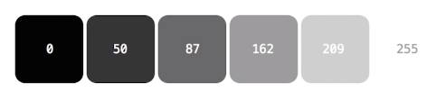
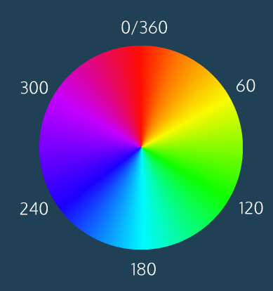

HTML
Naming
<tag attribute(name)="attribute(value)"> content </tag>HTML Boilerplat
<!doctype html>
<html lang="en">
<head>
<!-- Required meta tags -->
<meta charset="utf-8">
<meta http-equiv="X-UA-Compatible" content="IE=edge">
<meta name="viewport" content="width=device-width, initial-scale=1, shrink-to-fit=no">
<meta name="description" content="">
<!-- Facebook Open Graph data -->
<meta property="og:title" content="" />
<meta property="og:type" content="website" />
<meta property="og:url" content="https://www.myurl.com/" />
<meta property="og:image" content="" />
<meta property="og:description" content="" />
<meta property="og:site_name" content="" />
<!-- Twitter Card data -->
<meta name="twitter:card" content="">
<meta name="twitter:site" content="@mywebsite">
<meta name="twitter:title" content="">
<meta name="twitter:description" content="">
<meta name="twitter:creator" content="@mywebsite">
<meta name="twitter:image:src" content="">
<!-- Bootstrap CSS -->
<link rel="stylesheet" href="https://stackpath.bootstrapcdn.com/bootstrap/4.3.1/css/bootstrap.min.css" integrity="sha384-ggOyR0iXCbMQv3Xipma34MD+dH/1fQ784/j6cY/iJTQUOhcWr7x9JvoRxT2MZw1T" crossorigin="anonymous">
<!-- Font Awesome -->
<script src="https://kit.fontawesome.com/ae46c9edb9.js" crossorigin="anonymous"></script>
<!-- My CSS -->
<link rel="stylesheet" href="style.css">
<title>Hello, world!</title>
</head>
<body>
<h1>Hello, world!</h1>
<!-- jQuery first, then Popper.js, then Bootstrap JS -->
<script src="https://code.jquery.com/jquery-3.3.1.slim.min.js" integrity="sha384-q8i/X+965DzO0rT7abK41JStQIAqVgRVzpbzo5smXKp4YfRvH+8abtTE1Pi6jizo" crossorigin="anonymous"></script>
<script src="https://cdnjs.cloudflare.com/ajax/libs/popper.js/1.14.7/umd/popper.min.js" integrity="sha384-UO2eT0CpHqdSJQ6hJty5KVphtPhzWj9WO1clHTMGa3JDZwrnQq4sF86dIHNDz0W1" crossorigin="anonymous"></script>
<script src="https://stackpath.bootstrapcdn.com/bootstrap/4.3.1/js/bootstrap.min.js" integrity="sha384-JjSmVgyd0p3pXB1rRibZUAYoIIy6OrQ6VrjIEaFf/nJGzIxFDsf4x0xIM+B07jRM" crossorigin="anonymous"></script>
</body>
</html>
HTML Tables
<table>
<thead> <!-- table head -->
<tr>
<th>xxx</th>
<th>xxx</th>
</tr> <!-- table row -->
</thead>
<tbody> <!-- table body -->
<tr>
<td>xxx</td> <!-- cell -->
<td colspan="2">xxx</td> <!-- merge 2 columns -->
<td rowspan="2">xxx</td> <!-- merge 2 rows -->
</tr>
</tbody>
<tfoot>
<tr>
<td>xxx</td>
</tr>
</tfoot> <!-- table footer -->
</table>HTML Forms
A form is defined by a <form> tag. Inside you define :
- An action = where to send the info
- A method = what to do when the form is submitted
<form action="/example.html" method="POST">
</form><input> tags allows to create fields where visitors can type information. Input tags must have different attributes:
- name = that is how you will identify it when the form is send
- value = the value of the field & the placeholder value before the user type it (will be paired with the name).
- type = determine how it will render :
- text = normal text field
- password = field where what you type is hidden
- number = restrict to number. You can add attributes:
- step=1 = will create arrows inside the input and allows the user to increase/decrease numbers 1 by 1
- range = will create a slider. You can add attributes:
- min
- max
- step
- checkbox = don't forget to put a value! (it will be invisible but this is what will be send to the form). And then to associate it to a label (so that the user knows what this checkbox correspond to)
- radio = to group radio together they must have the same name (and thus you can only select one)
- text and list=id = will pair the input to a datalist with the same id
- submit = the value argument will be the display text of the button
<label> tags are paired with input and serve as their "display name". You type the name of the label between the opening and closing tag and you pair it with an input with the attribute for:
- The input must have an id, and the label must have the same for
- Important for ex when using checkbox or radio button. Because when you click on the label it will check the box
<form action="/example.html" method="POST">
<label for="meal">What do you want to eat?</label>
<input type="text" name="food" value="Already pre-filled" id="meal">
</form><select> tag allows you to create dropdown lists. Inside the select tags you need <options> tags each with a value with your different options:
- The value of<option> is the text that will be send to the form
- The text between the opening and closing <options> tag is the displayed text
<form action="/example.html">
<label for="lunch">What's for lunch?</label>
<select name="lunch" id="lunch">
<option value="pizza">Pizza</option>
<option value="pizza">Curry</option>
<option value="pizza">Salad</option>
<option value="pizza">Ramen</option>
<option value="pizza">Tacos</option>
</select>
</form><datalist> tag also create a dropdown but inside an text field, so that users can type into it to easily find options. Inside the datalist you put <options> tags. The <input> tag where the <datalist> is must have a list attribute with the value of the datalist id
<form action="/example.html">
<label for="city">Ideal city to visit?</label>
<input type="text" list="cities" id="city" name="city">
<datalist id="cities">
<option value="New Yor City"></option>
<option value="Tokyo"></option>
<option value="Barcelona"></option>
<option value="Mexico"></option>
<option value="Bandol"></option>
</datalist>
</form><textarea> tags are used to create a bigger text field. If you want a default text you need to include it between the opening and closing textarea tags. This field can take arguments:
- rows: determine the width of the field
- cols: determine the height
CSS
Naming
selector {
property: value;
property: value;
property: value;
}Priority
id > class > element >>> The most specific is always the one taken into account
The last CSS sheet style link will have priority against the one placed above. Same for JS. (So for example always put your own CSS after jQuery or Boostrap)
CSS Units
vh = Viewport height (screen height)
- 1vh = 1% of viewport height
- 100vh = 100% of viewport height
vw = Viewport width (screen width)
- 1vh = 1% of viewport width
- 100vh = 100% of viewport width
em = Relative to the font-size of the element (2em = 2 times the size of the current font)
rem = Relative to the font-size of root element (2em = 2 times the size of the root font)
% = Relative to the parent element
Import
You can import a CSS file within another CSS file:
@import url("components/avatar.css");You can import a CSS file from an external source:
@import url("components/avatar.css");So a good practice is to link your index.html to one home.css file, and put all the other CSS sheets inside this same file :
- @import url(style1.css);
- @import url(style2.css);
- @import url(style3.css);
- etc...
Gradient Filter
The format of a CSS gradient filter:
background: linear-gradient(angle,
start-color start-point,
end-color end_point),
url('background.jpg')Example:
background: linear-gradient(135deg,
yellow 0%,
green 50%),
url('background.jpg')Positionning in CSS
By default, blocks will stack on top of each other. Then the position propriety can take those values:
- static (default)
- relative: relative to his "static" / "normal" / "default" position. (It is not relative to its parent element). So if I then use a proprieties like top or left, it will move the element from the top and from the left of his default static position. It is also used to pin an element on the page (so that its children elements can be positioned: absolute relatively to it)
- absolute: is absolute compared to its 1st positioned parent. If there are no positioned parent, it will be absolute compared to the body. So you basically remove it from the flow (other elements of the page will ignore it and act like it was not here)
So a common pattern is:
- I create a first div with position: relative (not because I want to move it but just because I want to pin it)
- I put an inner div inside my div with position: absolute. So it will be positioned relatively to my parent div. And now I can use left and right to position it within my div
#relative {
position: relative;
}
#absolute {
position: absolute;
top: 10px;
right: 10px;
}Offset properties: left right top bottom. Can be set in px, em, or %. Will not work if the position of the element is static
Z-index: greater z-index will be in front of lower z-index. It doesn't work on static elements.
Display
Display propriety dictate if an element can share horizontal space with others or not
- inline: only take the horizontal space of its width (default for tags like <em> <strong> <a> etc…). Inline elements cannot be altered in size by height and width css proprieties.
- block: will fill the entire horizontal space of the page. Their height by default is the height of their content. But their height and width can by modified by CSS proprieties. (default for tags like <h1> <h6> <p> <div> <footer> …)
- inline-block: combine properties of both: they will appear next to each other but you can specify their dimensions using width and height (by default for images)
Flexbox: to align
- Your flexbox needs the display: flex property
- Flexbox property:
- Justify-content: space-around: will distributes items equally horizontally
- Justify-content: space-between: will equally distribute the space between my items (the first and last one will stay stick to the flexbox)
- align-items: center: will align it vertically (even if they don't have the same height)
- You then defines flex-items with the flex property that takes 3 values:
- 0 = cannot grow / 1 = can grow (if you do it you can put width = auto)
- 0 = cannot shrink / 1 = can shrink
- 200px = width
- You can then use the :first-child and :last-child selectors
Example:
.flex {
display: flex;
justify-content: space-around;
align-items: center;
}
.flex-item {
flex: 0 0 200px;
}Float
float: left or float: right will move an element as far as left/right as possible. It must have a specified width (otherwise it will have the full width of its containing element and moving it right or left will not have any visible results).
A floating element will be removed from the flow. Which means for example that if it is inside a div, this div will lose its height.
Clear
When an element is floating, if it doesn't take full width of the page, so following elements will come next to it. To avoid that you can use the propriety clear (left, right or both) on the following elements. It will prevent them to go next to the floating element.
- left: the left side of the element will not touch any other element within the same containing element
- right: the right side of the element will not touch any other element within the same containing element
- both: neither sides of the element will touch any other element within the same containing element
- none: the can touch either sides
The Box Model

Border style values : Moz doc
div {margin: 0 auto;} The div must have a fixed width, and it will center it in its containing elements.
Margin Collapse
Horizontal margins (let and right) between two elements are added together to define the space between those elements:
#img-one {
margin-right: 20px;
}
#img-two {
margin-left: 20px;
}>>> There will be 40px of horizontal space between those two elements.
On the contrary, vertical margin collapse. It means that they are packed together and thus the larger of the two vertical margins will set the distance between two elements:
#img-one {
margin-top: 30px;
}
#img-two {
margin-bottom: 20px;
}>>> There will be 30px of vertical space between those two elements (and not 50px)
Overflow
The overflow property allows you to control what happens to a content if it spills or overflows outside its box :
- hidden : any content that overflows will be hidden from view.
- scroll : scrollbar will be added to the element's box so that the rest of the content can be viewed by scrolling.
- visible : the overflow content will be displayed outside of the containing element. (This is the default value).
The overflow is set on a parent element to affect its child elements.
Resetting Default
All web browsers have default stylesheet values (known as "user agent"). Often set a default value for padding and margin for example. So it is useful to reset those values with the * propriety:
* {
margin: 0;
padding: 0;
}(When you set margin or padding to 0 you don't need any unit measurement).
Other proprieties may be useful to reset: Code Ac
Box Model: Border-Box
By setting the default model of all HTML elements to border-box, with the "box-sizing" propriety like that:
* {
box-sizing: border-box;
}You define a new box model called "border-box" that have the following proprieties:
- The border thickness will be included inside the overall width and height of the box
- The padding will be included inside the overall width and height of the box
- So the height and width of the box will remained fixed (even if padding and border changes)
Overall it makes that the width and height of your element is not affected by the padding and border.
Display None VS Visibility Hidden
An element with display: none will be completely removed from the web page. An element with visibility: hidden, however, will not be visible on the web page, but the space reserved for it will.
RGB Color Model
RGB = red, green, blue. Each parameter defines the intensity of that color and can be an integer between 0 and 255 or a percentage value (from 0% to 100%). The synthax is rgb(red, green, blue)
RGBA = red, green, blue, alpha. Alows you to add a forth value between 0.0 and 1.0 define the transparency/opacity of your color. So color:transparent = color: rgba(0, 0, 0, 0)
In RGB system, if you put the same value for the 3 colors, you are on the grey scale. At 0 you are totally black and at 255 you are totally white. And in between you have greyscales:
HSL Color Model
HSL = hue, saturation, lightness
the synthax is: color: hsl(120, 60%, 70%); where:
- first number = the degree of the hue (= an angle on a color wheel. Red = 0, Green = 120, Blue = 240)
- second number = the saturation % = intensity or purity of the color (0% = grey, 100% = richest color)
- third number = lightness % = how light or dark the color is (0% = black, 50% = normal, 100% = white)
>> It is useful if you just want to change the lightness or saturation of a color (more complex in RGB). Also usfull if you whant to have a set of colors that work well together: same saturation and lightness.
HSLA = as for rgb, you can add a last argument between 0 and 1 to add transparency to your color
Typography
In CSS you have the system of fallback fonts:
h1 {
font-family: "Garamond", "Times", serif;
}>>> This says "use Garamond, if not available, use Times, if not available, any serif font pre-installed on the user device.
Font types are:
- serif
- san-serif
- monospace
Font weight values range from 100 to 900 and can only be multiples of 100 (100, 200, 500...)
Font proprieties:
- font-style: italic;
- word-spacing: Xem; (by default = 0.25em)
- letter-spacing: Xem;
- text-transform:
- uppercase
- lowercase
- capitalize
- line-height (modify the leading of the text)
- can take an unitless value, like "1.2". (It will define line height according to font size)
- can take a unite value in px, %, ems, rems…
Font-face
You can use font-face to load any font you want into the browser of your user. You can use it with your own font in your own server or with an external source. You need to specify :
- the name of the font
- the direction of the font file
- the format of the font file (Different browsers support different font types, so providing multiple font file options will support more browsers).
@font-face {
font-family: "Roboto";
src: url(fonts/Roboto.woff2) format('woff2'),
url(fonts/Roboto.woff) format('woff'),
url(fonts/Roboto.tff) format('truetype');
}You can use font-face with Google Font. You just have to type directly the URL of the font you want to use following this synthax: https://fonts.googleapis.com/css?family=Space+Mono:400,700 and just copy and paste the font-face code of the /*latin*/ font on your CSS file.
CSS Grid
To work a grid needs a grid container and grid items.
Grid containers: must have the propriety: display: grid;
Inside containers you define columns:
- By default grids contain 1 column
- Then you can define the columns of a grid with the propriety: grid-template-columns: 200px 300px; >>> Meaning there will be 2 columns, the first one of 300px and the second one of 300px
- You can define column width in px, % (of the total grid width), and you can mix between units in the same grid
.grid {
display: grid;
width: 500px;
grid-template-columns: 200px 300px;
}Inside containers you also define rows:
- Work the same way as columns, with the propriety : grid-template-rows: 200px 300px; (only that it defines the height instead of the width. So if you define it in %, it is according to grid height)
- By default, rows are sized to fit inside the grid
You can also use one propriety for both rows and colums: grid-template
.grid {
display: grid;
width: 1000px;
height: 500px;
grid-template: 200px 300px / 20% 10% 70%;
}>>> Before the / are rows, after the / are columns.
Fractions: The fr unit define the size of columns and rows as a fraction of grid length.
Ex: grid-template: 2fr 1fr 1fr / 1fr 3fr 1fr; >>> first row will be 2/4 of the grid, second row 1/4, third row 1/4. First column will be 1/5, second 3/5, third 1/5.
If you use fr combined with other units ; the fr will represent a fraction of the available space.
Repeat: You can use the repeat fonction like that: grid-template-columns: repeat(3, 100px); >>> is the same as writting : grid-template-columns: 100px 100px 100px;
You can use repeat with 2 values : grid-template-columns: repeat(2, 20px 50px) >>> first and third columns will be 20px, second and fourth 50px.
Minmax: grid-template-columns: 100px minmax(100px, 500px) 100px; >>> the 2nd column will vary between 100px and 500px depending on the size of the overall grid. (For minmax to work your grid can't have a fixed size).
Grid Gap:
- grid-row-gap: 10px > will add 10px between your rows
- grid-column-gap: 10px > will add 10px between your columns
- grid-gap: 20px 10px > will add 20px between rows and 10px between columns
Grid items:
grid-row-start and grid-row-end make a single grid items take up multiple rows. Same for grid-column-start and grid-column-end.
.item {
grid-row-start: 1;
grid-row-end: 3;
grid-column-start: 1;
grid-column-end: 3;
}>>> The element .item will starts at row 1 and stops at row 3 (so it will take the space of 2 rows). Same for columns.
You can also use it like that: grid-row: 1 / 3 and grid-column: 1 / 3 >>> Will start at 1 and stop at 3.
You can also use the span kw: grid-column: 4 / span 2; >>> means item will starts at column 4 and take 2 spaces. (So stops at 6).
So all the following statements are exactly the same:
- grid-column: 4 / span 2;
- grid-column: 4 / 6;
- grid-column-start: span 2; grid-column-end: 6;
Grid area: grid-area: w / x / y / z allows you to define all your rows and columns at the same time:
- w = grid-row-start
- x = grid-column-start
- y = grid-row-end
- z = grid-column-end
So grid-area: 2 / 3 / 4 / span 5; >>> means this item will start at row 2 and end at row 4. It will start at column 3 and take 5 column space.
Grid template areas: grid-template-areas property allows you to name sections of your webpage to use it as values of a grid.
Ex:
<div class="container">
<header>Wielcom!</header>
<nav>Links</nav>
<section class="info">Info!</section>
<section class="services">Services!</section>
<footer>Contact us!</footer>
</div>.container {
display: grid;
max-width: 900px;
position: relative;
margin: auto;
grid-template-areas: "head head"
"nav nav"
"info services"
"footer footer";
grid-template-rows: 300px 120px 800px 120px;
grid-template-columns: 1fr 3fr;
}
header {
grid-area: head;
}
nav {
grid-area: nav;
}
.info {
grid-area: info;
}
.services {
grid-areas: services;
}
footer {
grid-area: footer;
}>>> With this code you build the following grid:
- head will take 1st row and 2 columns
- nav will take 2nd row and 2 columns
- info will take 3rd row and left column
- service will take 3rd row and right column
- footer will take 4th row and 2 columns
(Don't forget to declare each elements with the grid-area propriety)
Justify Items: allows you to align items inside the grid area. Can take following values:
- start = align items to the left side of the grid area
- end = align items to the right side of the grid area
- center = align items to the center of the grid area
- stretch = stretch all items to fill the grid area
- ... and more
Justify Content: allows to position an entire grid within its parent element. Can take following values:
- start = align the grid to the left side of the grid container
- end = align the grid to the right side of the grid container
- center = align the grid to the center of the grid container
- stretch = stretch the grid items to increase the size of the grid to expand horizontally across the container
- space-around = includes an equal amount of space on each side of a grid element (resulting in double the amount of space between elements as there is before the first and after the last element)
- space-between = includes an equal amount of space between grid items but no space at either end
- space-evenly = places an even amount of space between grid items and at either end
- ... and more
Align Items: is the equivalent of justify-items but it align vertically. It can take following values:
- start = align items at the top of the grid area
- end = align items at the bottom of the grid area
- center = align items at the center of the grid area
- stretch = stretch all items to fill the grid area
- ... and more
Align Content: is the equivalent of justify-content but it aligns vertically. It can take following values:
- start = align the grid at the top of the grid container
- end = align the grid at the bottom of the grid container
- center = center the grid vertically in the grid container
- stretch = stretch the grid items to increase the size of the grid to expand vertically across the container
- space-around = includes an equal amount of space on each side of a grid element (resulting in double the amount of space between elements as there is before the first and after the last element)
- space-between = includes an equal amount of space between grid items but no space at either end
- space-evenly = places an even amount of space between grid items and at either end
- ... and more
Justify Self and Align Self:
- justify-self = specifies how an individual element should position itself horizontally
- align-self = specifies how an individual element should position itself vertically
- It can take similar values than align-items and justify-items
- It will override align-items or justify-items
Implicit Grid
If you can't define in advance how many rows/columns you will have on your grid, the implicit grid takes over. Default rules of the implicit grid are:
- Items fill up rows first, adding new rows as necessary
- New grid rows will only be tall enough to contain the content within them
You can modify those default behaviors with the following proprieties:
- grid-auto-rows = specifies the height of implicitly added grid rows
- grid-auto-columns = specifies the width of implicitly added grid columns
- It can take px, %, fr and the repeat() function
With grid-auto-flow you can also specify if you want new elements to be added to rows or columns. It can takes following values:
- row = new elements should fill rows from left to right and create new rows when there are too many elements (default)
- columns = new elements should fill columns from top to bottom and create new columns when there are too many elements
- dense = invokes an algorithm that attempts to fill holes earlier in the grid layout if smaller elements are added
- You can pair row and column with dense = grid-auto-flow: row dense;
JAVASCRIPT
https://caniuse.com/ is a website where you can see the compatibility of some code features with all different browsers.
Variables
var = normal variable (old naming)
let = variable that can be modified
const = constant variable. Can't be modified
Ex:let favFood = "Pizza";
console.log(favFood) // Will return "Pizza"
favFood = "Pasta"
console.log(favFood); // Will return "Pasta"
const name = "Renaud";
console.log(name); // Will return "Renaud"
name = "Pas Renaud"
console.log(favFood); // Will return "TypeError"Tips: XXX = XXX + 1 can also be written : XXX += 1
Same for -=, *=, /=
Same for ++, --, //, ** it means adding, subtract, divise or multiply by 1
String Interpolation: Allows you to insert a variable within a string without using the "+". For that you need to wrap your string with `
var myPet = "armadillo";
console.log(`I own a pet ${myPet}.`);
// Output: I own a pet armadillo.
Math
In JavaScript, to get a random number between 0 and 1, use the Math.random() function : console.log(Math.random()); >>> will return for ex : 0.5408145050563944
Then if you want a random number between 1 and 10, just multiply the result of Math.random by 10, then round up or down:
- Math.floor(Math.random() * 10) >> will round down to a whole number
- Math.ceil(Math.random() * 10) >> will round up to a whole number
- Math.round(Math.random() * 10) >> will round to the nearest whole number
Conditional Statements
Truthy / Falsy Values: If you use an if on a non-bolean value (a string or a number for example), this value is neither "true" nor "false". But it is "truthy" or "falsy":
- It is "truthy", so will return true if : it exists / is defined
- It is "falsy", so will return false if :
- it doesn't exist / is not defined : null
- it is empty : ""
- it is equal 0
- it is equal : NaN (Not a Number)
let numberOfApples = 0;
if (numberOfApples){
console.log('Let us eat apples!');
} else {
console.log('No apples left!'); } // Outputs "No Apples Left !"
Short-circuit Evaluation: The pipe comparison tool || can replace an if. Indeed it will return option "A" or "B". So it will test first the first option. So if "A" exists, it takes "A", otherwise it takes "B". So it works exactly like an if.
let defaultName;
if (username) {
defaultName = username;
} else {
defaultName = 'Stranger';
}
// is the same as
let defaultName = username || 'Stranger'
Functions
// To declare it
funcion functionName() {
console.log('blablabla');
}
// To call it
functionName();
Function have "hoisting" caracteristic, meaning you can call it (and use it) before declaring it. You can declare it after (even if it is not a good practice)
Since ES6 you can define a default value of a function parameter
function greeting (name = 'stranger') {
console.log(`Hello, ${name}!`);
}
// Will return "Stranger" if name is not defined
Return: by default a fonction will always return undefined. Even when it work perfectly. In order for a function to return a result you need to use the keword return. With that I tell the function what value it has to return.
Function calculateArea(width, height) {
const area = width*height ;
return area ;
}
The return kw also allows you to stop the execution of a function. Indeed a function will stop when it meets return
if (xxx = false) {
return 'You need xxx to be true to continue' ;
}
Function Expression: Allows you to store an anonym function inside a variable and then call this function by calling the variable. You can also add arguments directly inside the variable (we usually use the const kw for that):
Const variableA = function(arg1, arg2) {
Blablabla;
};
variableA(arg1, arg2)
Warning: a function expression is not "hoisted". You can't call it before declaring it
Arrow Functions
Since ES6, arrow functions synthax allows to define a function without using the "function" kw:
const rectangleArea = (width, height) => {
return width*height ;
};
Other ways to simplify your code:
- Functions with only 1 argument doesn't need parenthesis: const varA = arg1 => { ... }; (if there are 0 or more than 1 argument you do need parenthesis).
- Functions that fit in only "one line of code" doesn't need braces nor return (its called "implicit return"): const sum = number => number + number;
Scope
It defines a "perimeter" on which you can use a variable. If variable is not define inside a function (outside the { } ), it belongs to the "global scope". It is then a "global variable", you can access it everywhere.
On the contrary if a variable is defined inside a function (inside the block), it belongs to the scope of this function, and you can use it only inside this function. It has a "block scope". It is then a "local variable".
If you have to many global variable, it creates "scope polution". All those variable can have indesirable effect everywhere in your code. It is better to have few global variables and to localize it.
You can have two identical variable with different values depending on which scope you are looking
Arrays
An array is a table, a variable on which you can store several elements: const hobbies = ['surf', 'teuf', 'sex'] >> here it is 3 strings but it can be all sorts of elements.
Index: you can then use each elements of an arrays calling its index. The first one have the index "0": hobbies[1] >> will return "teuf"
Length: return the number of elements in the array. hobbies.length >> will return "3"
(Btw you can use the same logic to return string letters: const name = "Renaud" / console.log(name[3]); >> will return "a")
Common array functions:
- .push(xxx) > add a value at the end of the array
- .pop() > remove the last element of the array (doesn't take any argument, will only remove the last element)
- .shift() > remove the first element of the array (doesn't take any argument, will only remove the first element)
- .unshift(xxx) > add a value at the beginning of an array
- .indexOf(xxx) > return the value of the index of the element xxx
- .splice(pos, x) > remove the element at the x position
- .splice(x, y, 'item1', 'item2') > add elements 'item1' and 'item2' at the x position of the array, and remove y elements from this same position. (So if y = 0, it will just add 2 elements to the array. And if y = 1, it will replace 1 element etc...)
- .slice(x, x) > return only a part of the array. Starts with the elment with index x (included) and stops at the element with index y (not included). It doesn't modify the original array, it just return a shorter copy. (Ex: array1 = ['pomme', 'bannane', 'fraise', 'chocolat'] >>> arra1.slice(1, 3) >>> will return ['banane', 'fraise'])
- .join() > return a string with the concatenate elements of the array separated by comas
- .join('') > same but without comas
- .join(' ') > same but with space between words
- .join('-') > same but with - between words etc...
- array1.concat(array2) > return a new array with concatenate values of both arrays (don't modify original arrays, create a new one)
- .trim(xxx) > remove space before and after a string
For Loop
Structure:
for (initialisation; stop condition; to execute at the end of each iteration) {
code to execute;
}
The "stop condition" is a boulean. The loop continues as long as this bolean is true. And it stops when the boulean is false.
Ex:var grades = [10, 5, 13, 20, 18];
var sum = 0
for (var i = 0; i < grades.length; i++) {
sum = sum + grades[i];
}
// Output 66 >> (10 + 5 + 13 + 20 + 18)
(A "nested loop", is a loop within a loop).
While Loop
Structure:
while (stop condition) {
code to execute;
}
You just specify the stop condition. You have to define the initialisation before and the iteration within the code to execute
Same Ex:var grades = [10, 5, 13, 20, 18];
sum = 0
i = 0
while (i < grades.length) {
sum = sum + grades[i];
i++;
}
// Output 66 >> (10 + 5 + 13 + 20 + 18)
Do...While Loop
Structure:
do {
code to execute;
} while (stop condition);
It is similar to the while loop but you specify the code to execute before. So it will execute at least one time (and until the stop condition is false). Whereas a normal while loop can sometimes never run if the stop condition is always false.
Same Ex:var grades = [10, 5, 13, 20, 18];
sum = 0
i = 0
do {
sum = sum + grades[i];
i++;
} while (i < grades.length);
// Output 66 >> (10 + 5 + 13 + 20 + 18)
Break: the break kw allows you to force a loop to stop (even if the stop condition is still true). Inside the block code of your loop you have to add an if condition like that : if (condition) { break; }
High-Order Functions
You can assign a fonction to a variable:
const functionA = () => {
code;
};
const variableA = functionA; // >> You do it without parenthesis
And so you cans then call the function by calling the variable like that: variableA(); <<< You can even pass arguments to it.
In JS, functions, like variables, are "first class objects", so like other objects you can assign proprieties to it like :
- .length();
- .name();
- .tostring();
- etc...
You can also pass a function as an argument to another function. You call those functions "call back" because they are called during the execution of the high-order function.
When you pass a function as an argument you don't want to call this function. By calling it you would have the result of the function as an argument (and not the function itself). That is why when you put a function as argument you put it without the parenthesis.
Iterators
Those are built-in array methods that allows you to iterate (loop) easily on arrays
.forEach();
Apply the same function to all the elements of an array.
Ex:const courses = ['pommes', 'poires', 'oranges', 'kiwi']
courses.forEach(function(courseItem) {
console.log('- ' + courseItem).
});
>>> Will apply the console.log(); to each elements of courses. (So we can say that forEach(); takes a call-back function as an argument.)
You can also write it with an arrow function: courses.forEach( courseItem => console.log('- ' + courseItem)) ;
This function doesn't create a new array. It just apply the function to each elements of the array but doesn't create a new element. It doesn't return anything, it always return undefined.
.map();
Also apply a function to all elements of an array, but this time it will return a nez array (with the new values)
Ex:const numbers = [1, 2, 3, 4, 5] ;
const bigNumbers = numbers.map(number => {
return number * 10 ;
});
// bigNumbers = [10, 20, 30, 40, 50]
.filter();
Apply a function to all elements of an array, and return a new array with only the elements for witch this function returned true
Ex:const mots = ['chien', 'chat', 'poussin', 'trotinette', 'hiiiibou'] ;
const petitsMots = mots.filter(mot => {
return mot.length < 6 ;
}); // petitsMots returns ['chien', 'chat']
>>> petitsMots will return an array filtering only the mots values with less than 6 characters.
.findIndex();
Apply a function to all elements of an array, and return the index of the first element that return true. (It stops at the first it finds).
Ex:const numbers = [40, 500, 230, 4, 9, 1] ;
const smallNumbers = numbers.findIndex(number => {
return number < 10 ;
});
>>> smallNumbers will return 3 because this is the index of "4", the first number inferior to 10 it finds.
If .findIndex(); doesn't find any element that fulfill the condition, it will return -1
.reduce();
Apply a function to all elements of an array, and return only one value. It takes 2 parameter. Initially the first parameter is the index 0 of the array, and the second one is the index 1 of the array. It will then apply the function using this two parameters.
Ex:const numbers = [1, 2, 4, 10];
const summedNums = numbers.reduce((accumulator, currentValue) => {
return accumulator + currentValue
});
>>> So initially:
- accumulator = 1
- currentValue = 2
So the first operation will be 1 + 2
Then the function do it again. So the new accumulator is 3 (1 + 2), and the new currentValue is 4
So the second operation will be 3 + 4
Etc...
So at the end, summedNums will return 17.
You can also add a second argument to the function, which will define an initial vallue to the accumulator. (Other than the index 0 of the array). So it will add a new step to the operation.
Ex:const numbers = [1, 2, 4, 10];
const summedNums = numbers.reduce((accumulator, currentValue) => {
return accumulator + currentValue
}, 100)
Instead of starting with accumulator = 1, you start with accumulator = 100 (and currentValue is still 1). After that it is the same:
- 100 + 1 = 101
- 101 + 2 = 103
- 103 + 4 = 107
- 107 + 10 = 117 >>> Final value of summedNums
.some();
Will look if at least one element of the array fulfill the condition, and will return true or false
.every();
Will look if all the elements of the array fulfill the condition, and will return true or false
Objects
Objects can be stored inside a variable, like any other JS element: let spaceship = {};
Inside objects you store data thanks to properties. Can be of any type (string, number, function etc...):
let spaceship = {
'Fuel Type' : 'diesel', // need ' ' here because there is a space on the property name
color : 'silver'
};
You then can access proprieties with the .dot operator: spaceship.color
Or with brackets: spaceship['Fuel Type']; (You have to use brackets actually if the property name has a space, a number or a special character).
If you call a property that doesn't existe, it returns undefined
You can also add, modify or delete properties:
- spaceship.type = 'alien' > If the property "type" exists, it will be modified. Otherwise it will be created
- delete spaceship.mission > Will delete "mission" property
When you store a function inside an object, you call it a method:
- A property is what an object has
- A method is what an object does
When you add a function to an object, the value of the property is an anonymus function:
const alienShip = {
invade: function () {
console.log('Hello! We have come to dominate your planet. Instead of Earth, it shall be called New Xaculon.');
}
};
Or shorter like that:
const alienShip = {
invade () {
console.log('Hello! We have come to dominate your planet. Instead of Earth, it shall be called New Xaculon.');
}
};
Ti call a method inside an object you also use the .dot operator, with the function name and parenthesis: alienShip.invade();
You can nest objects within objects (pass an object as a parameter of an higher object). And you can then call nested objects with a serie of .dot operators: spaceship.nanoelectronics['back-up'].battery;
Pass by Reference: It is the fact of modifiying an object property directly via a function.
First you define your object:
let spaceship = {
'Fuel Type' : 'Turbo Fuel',
homePlanet : 'Earth'
};
Then you create functions that will modify/add a property to this object
let greenEnergy = obj => {
obj['Fuel Type'] = 'Avocado Oil';
};
let remotelyDisable = obj => {
obj.disabled = true;
};
Then if you call those functions on your objects:
- greenEnergy(spaceship);
- remotelyDisable(spaceship);
It will modify your object like that:
let spaceship = {
'Fuel Type': 'Avocado Oil',
homePlanet: 'Earth',
disabled: true
};
Object Loops
You can't use a normal for loop on objects (because object key-value pairs are not in order). So you have to use for...in loop:
for (let x in objet.property) {
console.log(x);
};
>>> Will loop each object.property and console.log it
Ex:let spaceship = {
crew: {
captain: {
name: 'Lily'
},
'chief officer': {
name: 'Dan'
},
medic: {
name: 'Clementine'
},
translator: {
name: 'Shauna'
}
}
};
for (let crewMember in spaceship.crew) {
console.log(`${crewMember}: ${spaceship.crew[crewMember].name}`)
};
>>> Will outputs:
- "captain: Lily"
- "chief officer: Dan"
- "medic: Clementine"
- "translator: Shauna"
"This" KW
When you define a methode inside an object an that this function call property of this same object, you have to use the this kw, otherwise the scope of the function doesn't allows you to access the property:
const robot = {
model: '1E78V2',
energyLevel: 100,
provideInfo() {
return `I am ${this.model} and my current energy level is ${this.energyLevel}.`
}
};
console.log(robot.provideInfo());
>>> Without the this kw, the provideInfo() function doesn't work because it can't access model and energyLevel
WARNING: the this kw doesn't work (or at least not the same way), with arrow functions. Because arrow function already have an inherent this which is the one of the global scope. So you can't use this with arrow functions.
Privacy
In JS there is no built-in privacy for objects. So there is a naming convention to signal that a property is not supposed to be altered:
const bankAccount = {
_amount: 1000
};
Getters & Setters Methods
You use the "get" functions inside an object to perform more complex operations inside your object. (It is like a normal method property with a get before function name). It allows you to :
- Access and perform actions on the data of the object
- Using conditional if...else inside your object
- Access properties of the object, using this kw
Tips:
- get (and set) methods can't have the same name than a property. So a good practice is to put a "_" before the property names
- When calling a get method, no need to put parenthesis (it is like accessing a property)
const person = {
_firstName: 'John',
_lastName: 'Doe',
get fullName() {
if (this._firstName && this._lastName) {
return `${this._firstName} ${this._lastName}`;
} else {
return 'Missing a first name or a last name.';
}
}
};
// to call the getter method:
person.fullName; // Outputs 'John Doe'
Setters Methods work exactly like getter methods but allows you to reassign values of existing properties within an object:
- getters allows you to "get" (access) values within an object
- setters allows you to "set" (change, modify, reassign) values within an object
const person = {
_age: 37,
set age(newAge) {
if (typeof newAge === 'number') {
this._age = newAge;
} else {
console.log('You must assign a number to age');
}
}
};
// to use the setter method:
person.age = 40; // Now console.log(person._age); will return 40
Factory Functions
Factory functions represent the "structure" of an object. You use it when you want to create a lot of similar objects. You create a factory function that have the « property » structure of the object you want to create. For that you need to create a function that « return » an object. And basically you pass your object properties as your function arguments. And then by calling this function and passing it arguments, you create a new object.
Ex: this is a factory function to create a monsterconst monsterFactory = (name, age, energySource, catchPhrase) => {
return {
name: name,
age: age,
energySource: energySource,
scare() {
console.log(catchPhrase);
}
}
};Then you can create a new monster only by calling the function:
const ghost = monsterFactory('Ghouly', 251, 'ectoplasm', 'BOO!');And then you can call properties of your new monster:
ghost.scare(); // Returns 'BOO!'Since ES6 you have a shortcut. Because the key and the value of the proprieties where always the same, you can simplify and write only the key, like that:
const monsterFactory = (name, age) => {
return {
name,
age
}
};Destructured Assignment
This is a shortcut that allows you to extract the property of an object to put it in a variable. Normally you would do like that
const vampire = {
name: 'Dracula',
residence: 'Transilvania',
preference: {
day: 'stay inside',
night: 'satisfy appetite'
}
};
const residence = vampire.residence;
console.log(residence); // will print 'Transilvania'But to save you some keystrokes you can put the name of the property inside {} directly as the name of the variable like that
const {residence} = vampire;
console.log(residence); // will print 'Transilvania'Built-in Object Methods
You can use useful built-in methods to manipulate object like:
- Object.keys(my_object) >> will return an array with all the keys of my_object
- Object.entries(my_object) >> will return an array with all the entries (key + value) my_object
- Object.assign(new_properties, my_object) >> will return a new object that have the same properties of my_object + the new properties. (Or will modify those properties if they were already in my_object
- >> More examples in Moz Documentation
const robot = {
model: 'SAL-1000',
mobile: true,
sentient: false,
armour: 'Steel-plated',
energyLevel: 75
};
const robotKeys = Object.keys(robot);
console.log(robotKeys);
// Will return:
[ 'model', 'mobile', 'sentient', 'armour', 'energyLevel' ]const newRobot = Object.assign({laserBlaster: true, voiceRecognition: true}, robot);
console.log(newRobot);
// Will return:
{ laserBlaster: true,
voiceRecognition: true,
model: 'SAL-1000',
mobile: true,
sentient: false,
armour: 'Steel-plated',
energyLevel: 75 }Classes
Classes are tool to quickly produce similar objects. Classes are like "templates" used to create objects.
For example if you have this object:
let halley = {
_name: 'Halley',
_behavior: 0,
get name() {
return this._name;
},
get behavior() {
return this._behavior;
},
incrementBehavior() {
this._behavior++;
}
};You can create this class to build the same type of objects:
class Dog {
constructor(name) {
this._name = name;
this._behavior = 0;
}
get name() {
return this._name;
}
get behavior() {
return this._behavior;
}
incrementBehavior() {
this._behavior++;
}
};And then you can create new objects thanks to the class. It is called "create an instance". Like that:
const halley = new Dog('Halley');
// It will create this object:
Dog {
_name: 'Halley',
_behavior: 0
}Details of how to build a class:
- By convention class names are capitalize and CamelCase
- You need a constructor method. You will invoke it every time you create a new instance of the class
- Inside the constructor() method you use the this kw (to refers to an instance of this class)
- You can't include comas between your different methods (only synthax difference with an object)
- You need to use the new kw to create an instance of a class
Inheritance
When you have several similar classes you can create a "parent" class that will share the same properties and methods that its children classes. The children classes will have the same properties and methods but you can also add new ones.
So if we take our last example (dog creation). We can actually create a parent Animal class, like that:
class Animal {
constructor(name) {
this._name = name;
this._behavior = 0;
}
get name() {
return this._name;
}
get behavior() {
return this._behavior;
}
incrementBehavior() {
this._behavior++;
}
};And after that create a child cat class, that will have the same name and behavior properties, but also a new one called usesLitter:
class Cat extends Animal {
constructor(name, usesLitter) {
super(name);
this._usesLitter = usesLitter;
}
};So to create a child class you need:
- The extend kw. That makes the parent class available inside the child class
- The super kw. That calls the constructor of the parent class. You need it for the property that have an argument (To be able to pass this argument to the child class). Otherwise you don't need to even define the property, each child class automatically have the properties (and methods) of its parents. You always have to call the super properties before the ones specific to the child class. (Always use the super kw before the this kw)
Tips: if you have several properties with arguments that need to be called in the parent class by the super KW, you all put it in the SAME super kw (not several ones). Like that:
class Primary extends School {
constructor(name, numberOfStudents, pickupPolicy) {
super(name, 'primary', numberOfStudents);
this._pickupPolicy = pickupPolicy;
}
};Static Methods
Sometimes you will want a class to have methods that aren't available in individual instances, but that you can call directly from the class.
To create a static method you need to use the static kw like that:
class Animal {
constructor(name) {
this._name = name;
this._behavior = 0;
}
static generateName() {
const names = ['Angel', 'Spike', 'Buffy', 'Willow', 'Tara'];
const randomNumber = Math.floor(Math.random()*5);
return names[randomNumber];
}
};>>> We create a static method that return a random name when called. Because of the static kw we can only access this method by appending it to the Animal class.
So you can call the generateName method like that : Animal.generateName();
But if you create instances of Animal (or child classes), for example : const tyson = new Animal('Tyson');
Then you can't do that : tyson.generateName(); >>> It will return TypeError
Babel (Node JS Package)
Babel is a Node JS package that you can download and add to your folder structure. Then you call it with your terminal and it will automatically translate your ES6+ JS code to ES5 JS code:
- npm init - A terminal command that creates a package.json file
- package.json - A file that contains information about a JavaScript project
- npm install - A command that installs Node packages
- babel-cli - A Node package that contains command line tools for Babel. (so to install it you have to type $ npm install babel-cli in your terminal. You can also add –D at the end of the commend to instructs npm to add the package to a property called devDependencies in package.json)
- babel-preset-env - A Node package that contains ES6+ to ES5 syntax mapping information. (so to install it you have to type $ npm install babel-preset-env in your terminal. You can also add -D at the end of the commend to instructs npm to add the package to a property called devDependencies in package.json)
- .babelrc - A file that specifies the version of the JavaScript source code. (So to install you have to type touch .babelrc into the terminal)
- Within babelrc you have to add {"presets": ["env"]} to instructs Babel to transpile any code from versions ES6 and later
- "build" script - A package.json script that you use to tranpsile ES6+ code to ES5
- For "build" script to work, you have to add it within the package.json file. Within the script method, add a property called build with the following value : babel src -d lib :
- babel - The Babel command call responsible for transpiling code
- src - Instructs Babel to transpile all JavaScript code inside the src directory
- -d - Instructs Babel to write the transpiled code to a directory
- lib - Babel writes the transpiled code to a directory called lib.
- npm run build - A command that runs the build script and transpiles ES6+ code to ES5
Modules
In JS, Modules are reusable pieces of code that can be exported from one program and imported for use in another program.
You can create modules thanks to the module.exports statement:
- you create an object
- you define properties or methods within this object
- you export this module (the object) with the module.exports statement
let Airplane = {};
Airplane.myAirplane = "StarJet";
module.exports = Airplane;Then we use the require(); function to import module. It takes the module file path as an argument:
- You create a const variable
- You set it equal to require('./module.js') (.js is optional and will be assumed if not included)
const Airplane = require('./1-airplane.js');
function displayAirplane() {
console.log(Airplane.myAirplane);
}
displayAirplane();>>> This make that you imported your module and assigned it to a local variable. You then can use all the methods and properties of your module within your file.
You can also wrap your data within the module.exports statement to directly export it:
module.exports = {
myAirplane: 'CloudJest';
};Export Default & Import: export default and import are the ES6 equivalent of module.exports and require():
let Menu = {};
export default Menu;
// Then to import:
import Menu from './menu';
- The import kw begins the statement
- The kw Menu here specifie the name of the variable to store the default export in (it is like Airplane in const Airplane = require…etc…)
- './menu' is the name of the module to load
Named Exports and Imports: In ES6 the export kw also allows you to export data through the use of variables. You can create variable, methods, objects or any data and export it with its specific name to be stored in its own variable:
let specialty = '';
function isVegetarian() {
};
function isLowSodium() {
};
export { speciality, isVegetarian } from './menu';
// Then you can import it like that:
import { speciality, isVegetarian } from './menu';You can even write the export kw before your variable/function to export it directly:
export let specialty = '';
export function isVegetarian() {
};
function isLowSodium() {
};Export as & Import as: You can use the export as kw to change the name of the variable you want to export:
let specialty = '';
function isVegetarian() {
};
function isLowSodium() {
};
export { speciality as chefsSpecial, isVegetarian as is Veg, isLowSodium };After that you have to import it normally with the alias name you created
You can also import as to give an alias or change the alias of a variable when you import it
You can also use it to import an entire module with a specific alias:
import * as Cart from './menu';
Carte.chefsSpecial;
Carte.isVeg();
Carte.isLowSodium();You can also combine and mix every export types together (default exports, named exports, direct on declaration export etc…):
let specialty = '';
function isVegetarian() {
};
function isLowSodium() {
};
function isGlutenFree() {
};
export { speciality as chefsSpecial, isVegetarian as is Veg };
export default isGlutenFree;As you can also combine and mix every import types together (default import, named import etc…):
import { speciality, isVegetarian, isLowSodium } from './menu';
import GlutenFree from './menu';Promises
Here an example of a promise construction:
const executorFunction = (resolve, reject) => {
if (someCondition) {
resolve('I resolved!');
} else {
reject('I rejected!');
}
}
const myFirstPromise = new Promise(executorFunction);
- We declare a variable: myFirstPromise. It is constructed using new Promise()
- Promise() is the Promise constructor method
- executorFunction() is passed to the constructor method and has two functions as parameters: resolve and reject
- If someCondition evaluates to true, we invoke resolve()
- If not we invoke reject()
- (Promises are objects)
The executor function generally starts an asynchronous operation and dictates how the promise should be settled. So normally the resolve() and reject() functions aren't defined by the programmer, when the Promise constructor runs, JavaScript will pass its own resolve() and reject() functions into the executor function.
Example of promise: as the result of an asynchronous operation using setTimeout()setTimeout() is a Node API that uses callback functions to schedule task to be performed after a delay. It has two parameters:
- A callback function
- A delay in milliseconds
const delayedHello = () => {
console.log('Hi! This is an asynchronous greeting!');
};
setTimeout(delayedHello, 2000);
// delayedHello() will be invoked but with a delay of 2 seconds.Asynchronous JavaScript uses something called the event-loop. After two seconds, delayedHello() is added to a line of code waiting to be run. Before it can run, any synchronous code from the program will run. Next, any code in front of it in the line will run. This means it might be more than two seconds before delayedHello() is actually executed.
Ex: of how you will use setTimeout() to construct asynchronous promises:
const returnPromiseFunction = () => {
return new Promise((resolve, reject) => {
setTimeout(( ) => {resolve('I resolved!')}, 1000);
});
};
const prom = returnPromiseFunction();>>> We invoked returnPromiseFunction() wich returned a promise. We assigned that promise to the variable prom. prom will initially have a status of "pending". Indeed, the initial state of an asynchronous promise is pending.
Then() Method
Asynchronous promise always have an initial state of pending and then will settle. We use the then() method to say to the program what to do after that : "I have a promise, when it settles, then here's what I want to happen…". So then() will be fired only after the status of the promise has been resolved (fullfiled or rejected).
.then() is a higher-order function, it takes two callback functions as arguments. We refer to these callbacks as handlers:
- The first handler, called onFulfilled is a success handler, it contain what to do when the promise resolved
- The second handler, onReject is a failure handler, it contains what to do when the promise rejected
const prom = new Promise((resolve, reject) => {
resolve('Yay!');
});
const handleSuccess = (resolvedValue) => {
console.log(resolvedValue);
};
prom.then(handleSuccess); // Prints: 'Yay!'>>> Since prom resolves, handleSuccess() is invoked with prom‘s resolved value, 'Yay', so 'Yay' is logged to the console.
But with typical promise consumption, we won't know wheter a promise will resolve or reject, so we'll need to provide the logic for either case:
let prom = new Promise((resolve, reject) => {
let num = Math.random();
if (num < .5 ){
resolve('Yay!');
} else {
reject('Ohhh noooo!');
}
});
const handleSuccess = (resolvedValue) => {
console.log(resolvedValue);
};
const handleFailure = (rejectionReason) => {
console.log(rejectionReason);
};
prom.then(handleSuccess, handleFailure);Using catch() with Promises
To write cleaner code we use the separation of concerns principle. So we separate our resolved logic from our rejected logic:
prom
.then((resolvedValue) => {
console.log(resolvedValue);
})
.then(null, (rejectionReason) => {
console.log(rejectionReason);
});And to be even cleaner we use the .catch() function. It takes only one argument: onRejected. It is like using a .then() with only the failure handler:
prom
.then((resolvedValue) => {
console.log(resolvedValue);
})
.catch((rejectionReason) => {
console.log(rejectionReason);
});Chaining Multiple Promises
Chaining multiple promises is called composition:
firstPromiseFunction()
.then((firstResolveVal) => {
return secondPromiseFunction(firstResolveVal);
})
.then((secondResolveVal) => {
console.log(secondResolveVal);
});
- We invoke firstPromiseFunction() witch returns a promise
- We invoke .then() with an anonymous function as the success handler
- Inside the success handler we return a new promise. The result of invoking a second function, secondPromiseFunction() with the first promise's resolved value as a parameter
- We invoke a second .then() to handle the logic of the second promise settling
- Inside that .then() we have a success handler which will log the second promise's resolved value to the console.
2 common mistakes:
Promise.all()
It's a way to handle multiple promise without caring about the order. Promise.all() accepts an array of promises as its argument and returns a single promise. That single promise will settle in one of two ways:
- If every promise in the argument resolves > Promise.all() will resolve with an array containing the resolve value from each promise in the argument array
- If any promise from the argument array rejects > Promise.all() will immediately reject with the reason that promise rejected
let myPromises = Promise.all([returnsPromOne(), returnsPromTwo(), returnsPromThree()]);
myPromises
.then((arrayOfValues) => {
console.log(arrayOfValues);
})
.catch((rejectionReason) => {
console.log(rejectionReason);
});To sum up about promises:
- Promises are JavaScript objects that represent the eventual result of an asynchronous operation
- Promises can be in one of three states: pending, resolved, or rejected
- A promise is settled if it is either resolved or rejected
- We construct a promise by using the new keyword and passing an executor function to the promise constructor method
- We use .then() with a success handler callback containing the logic for what should happen if a promise resolves
- We use .catch() with a failure handler callback containing the logic for what should happen if a promise rejects
- Promise composition enables us to write complex, asynchronous code that's still readable. We do this by chaining multiple .then() and .catch()
- To use promise composition correctly, we have to remember to return promises constructed within a .then()
- We should chain multiple promises rather than nesting them
- To take advantage of concurrency, we can use Promise.all()
Async...Await
Since ES8, async…await was introduced and allows a better readability and scalability of promises and generators. Async kw is used to write function that handle asynchronous actions. Async kw allows to creates functions that return a Promise:
async function myFunc() {
// Function body here
};
myFunc();Or:
const myFunc = async () => {
// Function body here
};
myFunc();Async functions always return a promise. It will return in 3 possible ways:
- If there is nothing returned, it will return a promise with a resolved value of undefined
- If there is a non-promise value returned, it will return a promise resolved to that value
- If a promise is returned it will simply return that promise
So, a normal promise written like that:
function withConstructor(num){
return new Promise((resolve, reject) => {
if (num === 0){
resolve('zero');
} else {
resolve('not zero');
}
})
}Or can be written with the async kw like that:
async function with Async(num) {
if (num === 0) {
return 'zero';
} else {
return 'not zero';
}
};The Await kw: Without the await kw, an async function don't do much. The await kw can only be used inside an async function. It is an operator: it returns the resolved value of a promise. Await will halts or pauses the execution of the async function until a given promise is resolved. The await kw will causes an async function to pause execution until the desired promise is resolved.
Ex:async function asyncFuncExample(){
let resolvedValue = await myPromise();
console.log(resolvedValue);
}
asyncFuncExample(); // Prints: I am resolved now!
- Inside asyncFuncExample() we use the await to halt our execution until myPromise() is resolved
- We moreover assign myPromise() resolved value to the variable resolved value
- Then we log resolvedValue to the console
- (The resolvedValue of myPromise is "I am resolved now!")
Indeed, with native promises you will do a chain of .then() functions. Like that:
function nativePromiseVersion() {
returnsFirstPromise()
.then((firstValue) => {
console.log(firstValue);
return returnsSecondPromise(firstValue);
})
.then((secondValue) => {
console.log(secondValue);
});
}Whereas with async…wait:
async function asyncAwaitVersion() {
let firstValue = await returnsFirstPromise();
console.log(firstValue);
let secondValue = await returnsSecondPromise(firstValue);
console.log(secondValue);
}The synthax of using async with an arrow function is the following: const getData = async () => {};
Try...Catch
When .catch() is used with a long promise chain, there is no indication of where in the chain the error was thrown. This make debugging challenging.
With async…await, we use the try…catch statements for error handling:
async function usingTryCatch() {
try {
let resolveValue = await asyncFunction('thing that will fail');
let secondValue = await secondAsyncFunction(resolveValue);
} catch (err) {
// Catches any errors in the try block
console.log(err);
}
}
usingTryCatch();>>> Here we will "try" what is in the body of the try kw. If any of the promised will reject, the catch body will be executed, with the err argument being the reject value of the promise that was rejected.
Handling Independent Promises
If we have several independent promises that we need to await there is a trick. Indeed, we don't want to wait promise1 to be solved, then promise2 to be solved, and then do our resolution…
We want both promise to run (at the same time) and then, when both are solved, we want our resolution. We can do it like that:
async function concurrent() {
const firstPromise = firstAsyncThing();
const secondPromise = secondAsyncThing();
console.log(await firstPromise, await secondPromise);
}Await Promise.all()
We can also use the await Promise.all() to wait for multiple promises. Indeed the Promise.all() take an array of promise as argument and will resolve when all of these promise are resolved. So if we put await before it, it will await all those promises to be solved before going further.
Ex:async function asyncPromAll() {
const resultArray = await Promise.all([asyncTask1(), asyncTask2(), asyncTask3(), asyncTask4()]);
for (let i = 0; i < resultArray.length; i++){
console.log(resultArray[i]);
}
}HTTP Requests
One of JavaScript's greatest assits is its non-blocking properties, or that it is an asynchronous language. It uses an event loop to handle asynchronous function calls: when a program is run, function calls are made and added to a stack. The functions that make requests that need to wait for servers to respond then get sent to a separate queue. Once the stack has cleared, then the functions in the queue are executed.
For example:console.log('First message!');
setTimeout(() => {
console.log('This message will always run last...');
}, 0);
console.log('Second message!');The first and second message are run from the stack. The one in setTimeout() is added to the queue so it will always run after the others. (Even if the setTimeout() is set to 0 milliseconds.
XHR GET Requests
The AJAX GET request allows you to retrieve data from a server. Boilerplate of an AJAX GET request using an XMLHttpRequest:
const xhr = new XMLHttpRequest();
const url = 'https://api-to-call.com/endpoint'
xhr.responseType = 'json';
xhr.onreadystatechange = () => {
if (xhr.readyState === XMLHttpRequest.DONE) {
return xhr.response;
}
}
xhr.open('GET', url)
xhr.send()More info:
XHR POST Requests
The AJAX POST request allows you to send data to a server. Boilerplate of an AJAX POST request using an XMLHttpRequest:
const xhr = new XMLHttpRequest();
const url = 'https://api-to-call.com/endpoint'
const data = JSON.stringify({id: '200'});
xhr.responseType = 'json'
xhr.onreadystatechange = () => {
if (xhr.readyState === XMLHttpRequest.DONE) {
return xhr.response;
}
}
xhr.open('POST', url);
xhr.send(data);The Fetch Function
- It creates a request object that contains relevant information that an API needs
- It sends that request object to the API endpoint provided
- It Returns a promise that ultimately resolves to a response object, which contains the status of the promise with information the API sent back
Boilerplate of a fetch GET request:
fetch('https://api-to-call.com/endpoint').then((response) => {
if (response.ok) {
return response.json();
}
throw new Error('Request failed!');
},
(networkError) => {
console.log(networkError.message);
})
.then((jsonResponse) => {
return jsonResponse
});- You call the fetch() function and pass it the URL of your API request
- You chain a .then() method and pass it the success callback arrow function as its first argument
- This success callback function takes one parameter response
- Inside the response callback function you check if the ok property of response (response.ok) is truly (inside a if statement)
- If it is truly you return response.json()
- Else, you will throw a new error message if response.ok is falsy
- You add your second argument ( called the "failure hander") to your .then() function. It will be a callback function that takes a single parameter networkError and log networkError.message to the console
- You chain another .then() method to the first one (that will be executed only if the first one has finished and doesn't throw an error)
- You pass it a callback function that take jsonResponse as its parameter and return jsonResponse
>>> Check the diagram here
Boilerplate of a fetch POST request:
fetch('https://api-to-call.com/endpoint', {
method: 'POST',
body: JSON.stringify({id: '200'})
}).then((response) => {
if(response.ok) {
return response.json();
}
throw new Error('Request failed!');
},
(networkError) => {
console.log(networkError.message);
})
.then((jsonResponse) => {
return jsonResponse;
});(It is similar to the GET request, only that the initial call takes two arguments: an endpoint and an object, instead of just one).
Fetch with Async and await KW
You can also use the async, await, try kw with fetch to use GET and POST XHR requests:
GET:const getData = async () => {
try {
const response = await fetch('https://api-to-call.com/endpoint');
if(response.ok) {
const jsonResponse = await response.json();
return jsonResponse
} throw new Error('Request failed!')
} catch(error) {
console.log(error);
}
};const getData = async () => {
try {
const response = await fetch('https://api-to-call.com/endpoint', {
method: 'POST',
body: JSON.stringify({id: 200})
});
if(response.ok) {
const jsonResponse = await response.json();
return jsonResponse
} throw new Error('Request failed!')
} catch(error) {
console.log(error);
}
}TERMINAL
Terminal commands with Linux (Unbuntu)
- (wsl = launch Ubuntu terminal inside windows CMD)
- pwd = show current directory
- ls = list all current available directories
- ll = list all current available directories with more details
- cd folder_name = change directory to [folder name]
- cd = go back at the root
- cd.. = will go up one directory
- cd... = will go up two directory
- cd TAB = shortcut to show all available folders and directly go to it
- mkdir folder_name = create a new folder (never put spaces in folder names, otherwise you create 2 folders)
- touch file_name.xx = create a new file
- mv old_file_name.xx new_file_name.xx = rename a file
- mv file_name.xx /path/file_name.xx = will move the file into the new path. Also used to rename a file/folder
- cat file_name.xx = print the content of the file
- rm file_name.xx = remove the file ( permanently!)
- rm -rf folder_name = remove the folder ( permanently!)
- stt = open current folder in sublime text (not native function)